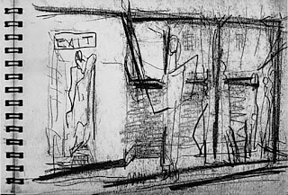
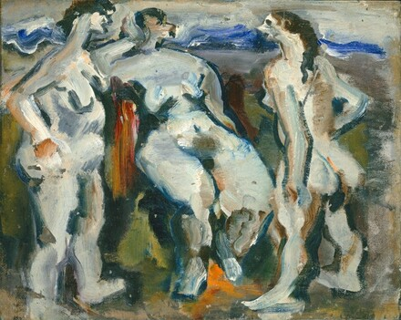
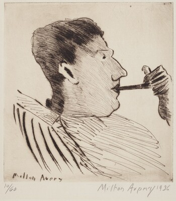
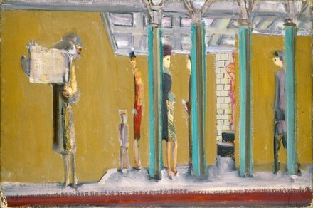
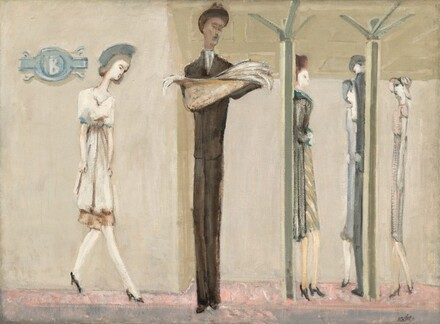

Mark Rothko, sketchbook drawing, mid-1930s, National Gallery of Art, Gift of The Mark Rothko Foundation, Inc.

Mark Rothko, Untitled (three nudes), 1933/1934, oil on black cloth, Gift of The Mark Rothko Foundation, Inc., 1986.43.94

Milton Avery, Rothko with Pipe, 1936, drypoint in brown-black on wove paper, Ailsa Mellon Bruce Fund, 1974.123.1

Mark Rothko, Untitled (subway), c. 1937, oil on canvas, Gift of The Mark Rothko Foundation, Inc., 1986.43.113

Mark Rothko, Underground Fantasy, c. 1940, oil on canvas, Gift of The Mark Rothko Foundation, Inc., 1986.43.130